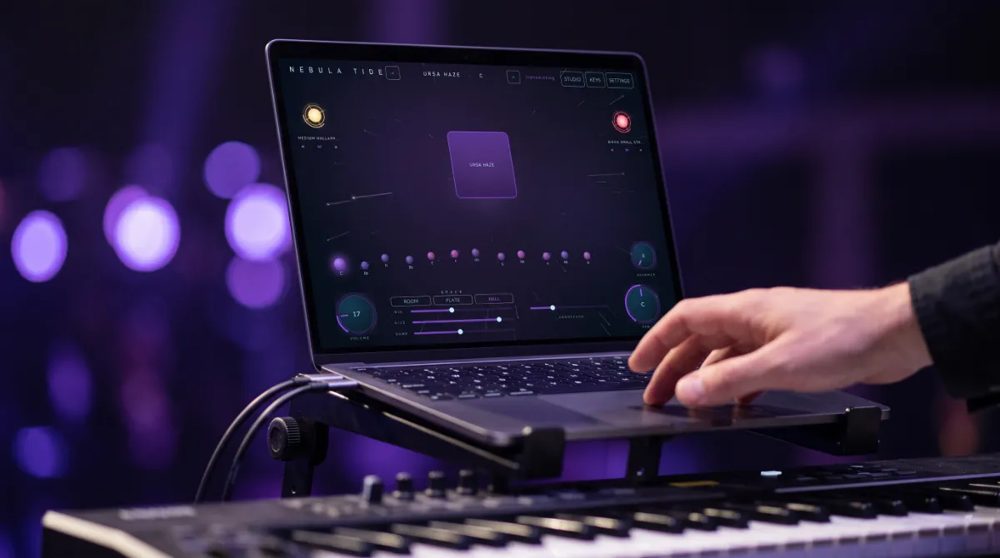
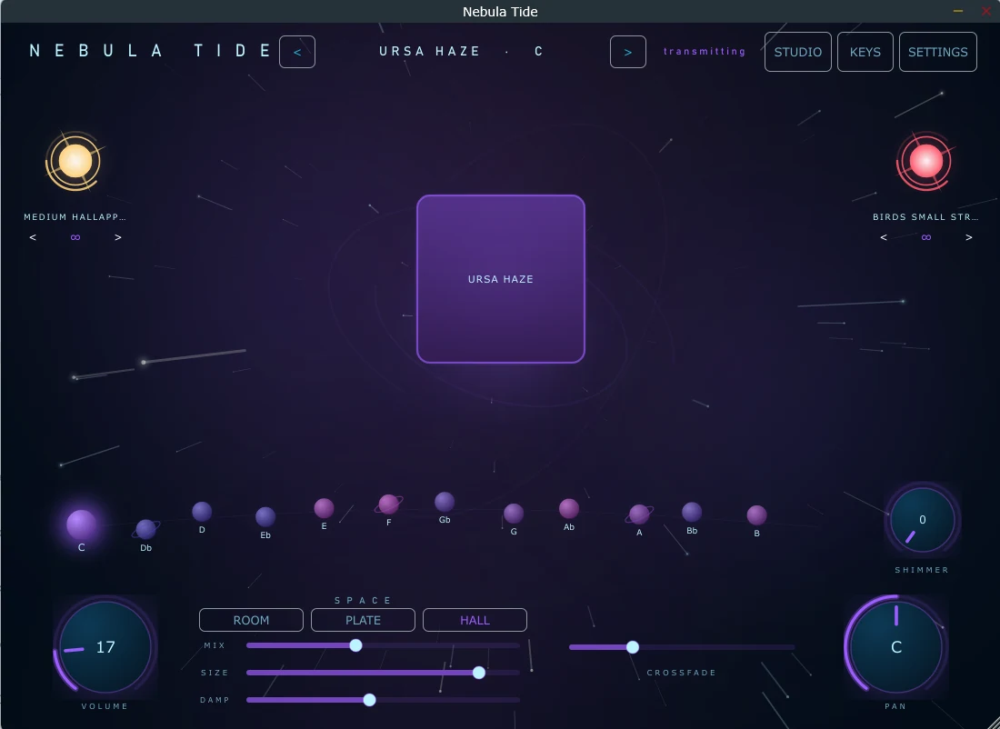
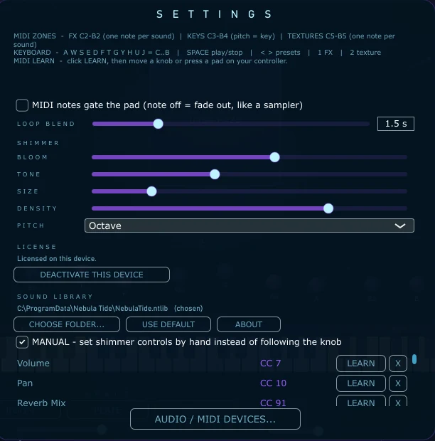
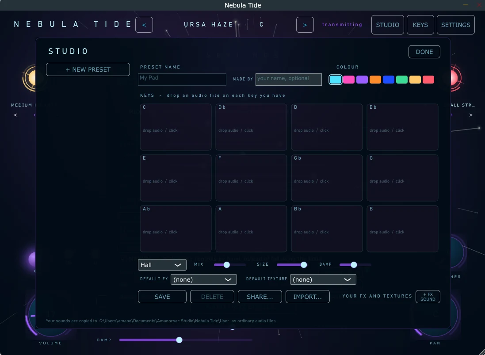
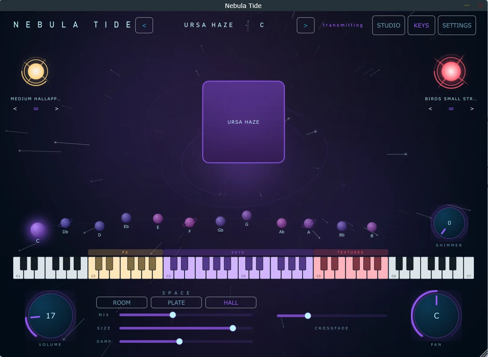
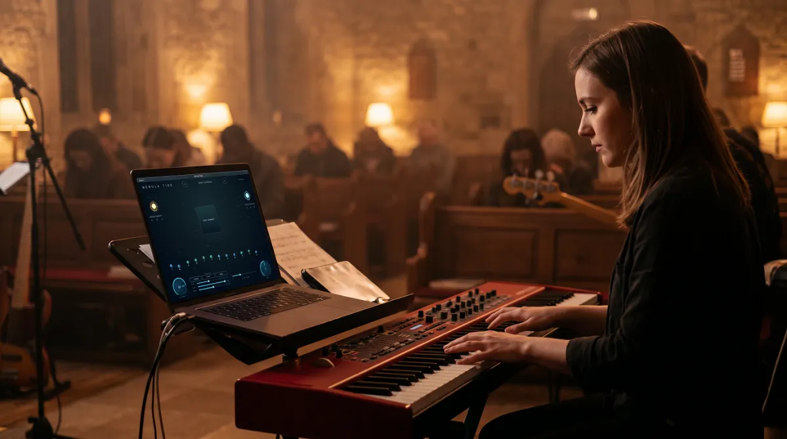

Version 2 · Windows, macOS and Android
Nebula Tide 2
The pad rises as it fades.
Nebula Tide gives you endless ambient pads in all twelve keys, recorded for real and never pitch shifted. Version 2 adds a shimmer the pads run through, presets you build from your own recordings, and a drag that puts a MIDI clip straight onto your timeline.
One purchase covers two machines · desktop versions install through Amanorsac Hub · Windows, Mac and Android

New in 2.0.2
Easier MIDI Learn, and a Volume for Textures and FX
A free update for everyone who owns Nebula Tide 2. Open Amanorsac Hub on Windows or Mac and it will offer it to you.
MIDI Learn, Made Easy
Mapping a knob or fader on your controller to a control in Nebula Tide takes far less fiddling now, so you can set your keyboard up before the service starts instead of during it.
Volume for Textures and FX
Textures and effects each have their own volume. Tuck them under the pad or bring them forward without touching the pad's level.
A Pad Under Everything You Play
Nebula Tide is an ambient pad instrument built for worship, prayer, transitions and anywhere music needs a bed underneath it. Tap a key and the room fills with a pad recorded in that key. Each of the twelve keys is its own real recording, so nothing is pitch shifted from one key to another, and every pad loops without a seam for as long as you leave it.
Version 1 gave you the pad. Version 2 gives you somewhere to put it. The pads now run through a shimmer that grows with them, you can build presets from your own recordings inside the app, and one drag takes what you are hearing onto a track in your DAW. The recordings underneath are exactly as they were.

Shimmer
A Shimmer in the Path, Not Beside It
Most shimmer plug-ins put the effect alongside the sound, so the pad and the shimmer arrive as two separate things sitting next to each other. Nebula Tide puts the shimmer in the path. The pad goes in and the shimmer comes out, so what you hear is one sound that grows, rather than two sounds stacked on top of each other.
One control does the work. At the bottom of its travel it adds a hint of air, and at the top it opens into a room with no ceiling. Turning it moves five things at once, each on its own curve: how much, how close, how bright, how dense and how far it regenerates. The pitch shifting is splice aligned rather than fixed interval, which is the difference between a shimmer that sounds smooth and one that sounds grainy.

Every Control, If You Want Them
A full set of shimmer controls waits in Settings for anyone who wants to shape it further: bloom, tone, size, density and pitch. Nobody has to touch them, and the single control on the stage sounds right on its own.
On Stage
Made for the Moment Between Songs
Nebula Tide was made for the pad under a worship set, the sound that holds a room together while the band changes key or the pastor prays. Pick the key of the next song, let the pad rise, and the transition takes care of itself.
Studio
Your Recordings, Our Engine
The new Studio page has twelve slots, one for each key. Drop your own recordings onto the key you recorded them in and the slot fills. Name it, save it and give it a colour, and it appears on the stage beside the presets we made. There is no folder structure to learn, no manifest to write and no restart. When you share a preset with someone, they import it in one click.

Timeline
From the Instrument to the Timeline in One Drag
Drag from the app onto a track in your DAW and a MIDI clip lands there, already in the right key. The clip carries the pad on one channel and the effects and textures on another, so a single drag reproduces exactly what you were just hearing.

Playable
Three Zones on One Keyboard
Your MIDI keyboard splits into three zones: effects low down, the twelve keys in the middle and textures at the top. One note plays a sound and its pitch picks the key. The zones are drawn on screen so you always know where you are.
Any knob can be learned to a controller. Press learn, move the knob on your controller and it is done.
Choose Where the Sounds Live
The installer shows you the path before it writes anything and lets you change it. Settings can move the library to another drive later without a reinstall.
A Protected Library
The recordings ship in a single encrypted container and are never written to disk in the clear. If you bought it, you will never notice.
Two Machines, Moved by You
One purchase covers the studio machine and the one that travels. Move a seat yourself from the app or from your account, with no support ticket.
An About Screen
Version, credits and licences, one click from Settings. Small, and the first thing you want when something needs reporting.
One Instrument, More Than One Machine
Windows and macOS ship the sound library with the app. The Android version downloads it the first time you open it, so the file you fetch stays small. It is the same instrument, the same presets and the same sound everywhere.
Windows
Windows 10 and 11, 64 bit. Standalone and VST3.
macOS
macOS 11 and later, Apple silicon and Intel. Standalone, AU and VST3.
Android
Android 9 and later. Sign in with the account you bought it with and it is yours, with the same licence and no second purchase.
iPhone and iPad
Built, and with Apple for review. It will arrive as an App Store release, and this page will say so the day it is approved.
What Stays Exactly the Same
If you have version 1, nothing you already like about it has moved. You still get twelve real key recordings that are never pitch shifted from one another, seamless loops that go on as long as you leave them, and the same living interface where you tap a planet, pick a key and the room fills. It still runs offline once it is installed.
Version 1 is not going anywhere either. It is sold on its own now, everyone who had it keeps it, and it keeps working. See version 1

You Choose
Pay What It Is Worth to You
$29, once. For that you get one licence key for the studio machine and the one that travels, a seat you can move yourself, and a year of updates. The version you have keeps working after that.
If money is the thing stopping you, pay the five. I would rather it was being played.
Tech Specs
Version
2.0.2 on Windows and macOS.
Sounds
Twelve real pad recordings, one in each key, never pitch shifted. Seamless loops.
Shimmer
In the signal path. One control on the stage moving amount, distance, brightness, density and regeneration, with bloom, tone, size, density and pitch in Settings.
Studio
Twelve slots for your own recordings. Name, colour and save presets, and share them with one-click import.
Timeline
Drag a MIDI clip onto a DAW track, already in key, with the pad on one channel and effects and textures on another.
MIDI
Three keyboard zones for effects, keys and textures. MIDI learn on any knob, quicker to set up since 2.0.2.
Mix
Separate volume for textures and for effects, under the pad's own level.
Formats
Standalone app and VST3 on Windows. Standalone app, AU and VST3 on macOS. Android app.
Platforms
Windows 10 and 11 (64 bit). macOS 11 and later, Apple silicon and Intel. Android 9 and later. iPhone and iPad with Apple for review.
Library
Single encrypted container, installed where you choose and movable later from Settings.
Licence
One purchase for two machines, moved yourself. Activate once, then works offline for a month at a time.
Questions
Does my version 1 licence still work?
Do my presets carry over?
Where do the sounds install?
How many machines?
Do I need the internet?
Is it a plug-in?
From people who use it
What Players Are Saying
Be the first to leave one.
Thank you.
It goes up once I have read it, usually within a day or two.
Nebula Tide 2
$29
One purchase covers two machines, installed and updated through Amanorsac Hub on Windows and Mac.
How to Pay
In Ghana, pay with MTN MoMo. Everywhere else, pay by card.
Ghana · MTN MoMo
Pay at the studio's MoMo link, then send the screenshot.
- Open the link or scan the code. The request is to Stephen Amanor Sackey, 024 685 8947.
- Send the amount you choose for Nebula Tide 2. Not sure of the cedi amount? Ask on WhatsApp first.
- Send the screenshot to 024 685 8947 on WhatsApp with the app's name and the email of your account here. Your code comes back the same day and unlocks it in My Apps.

Everywhere Else · Card
Pay by card, or ask us anything first.
Use the Buy button above. It takes Visa, Mastercard and Apple Pay in US dollars, and Nebula Tide 2 is in My Apps the moment it clears.
Questions before you buy? Scan the code and message the studio on WhatsApp.
Message on WhatsApp